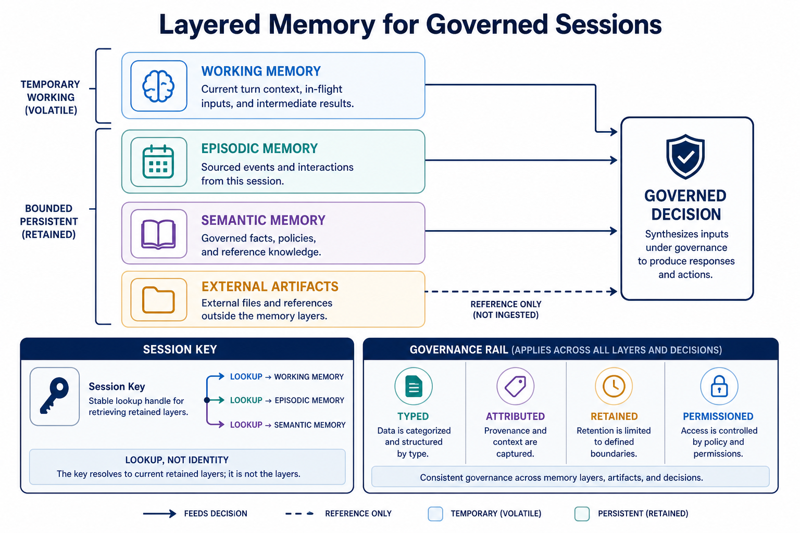
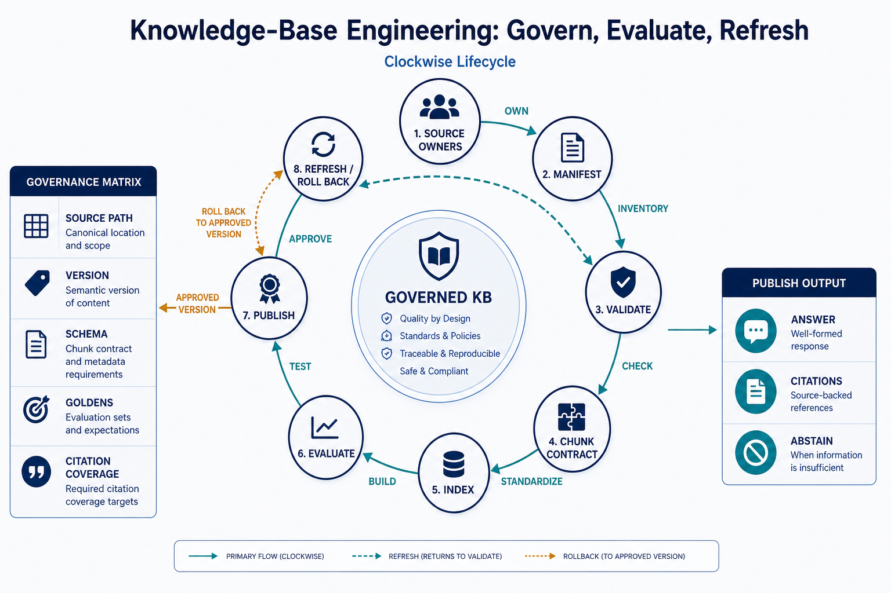
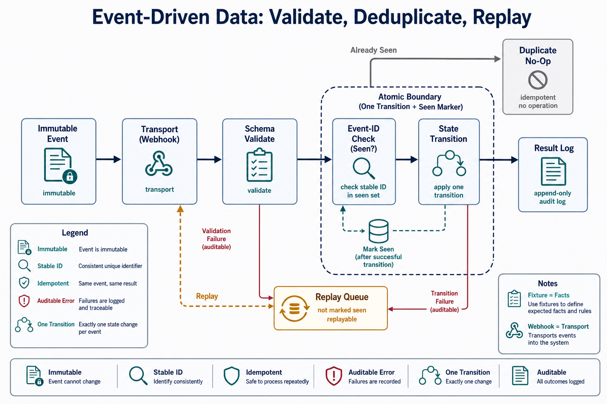
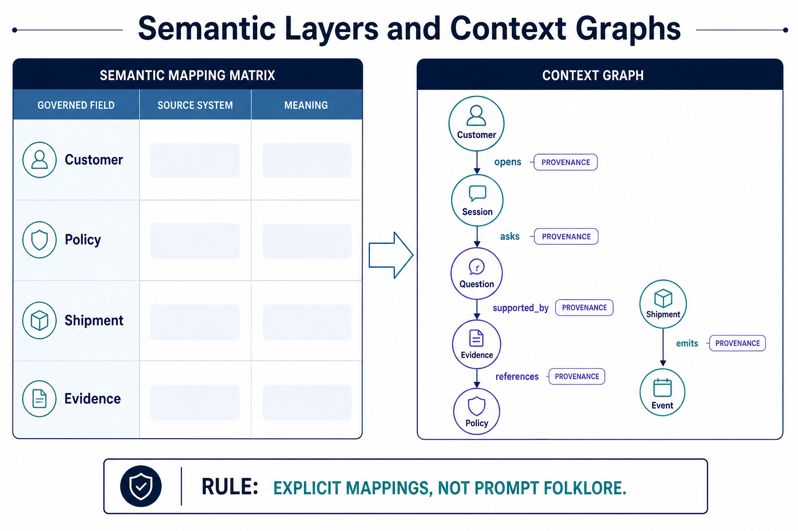
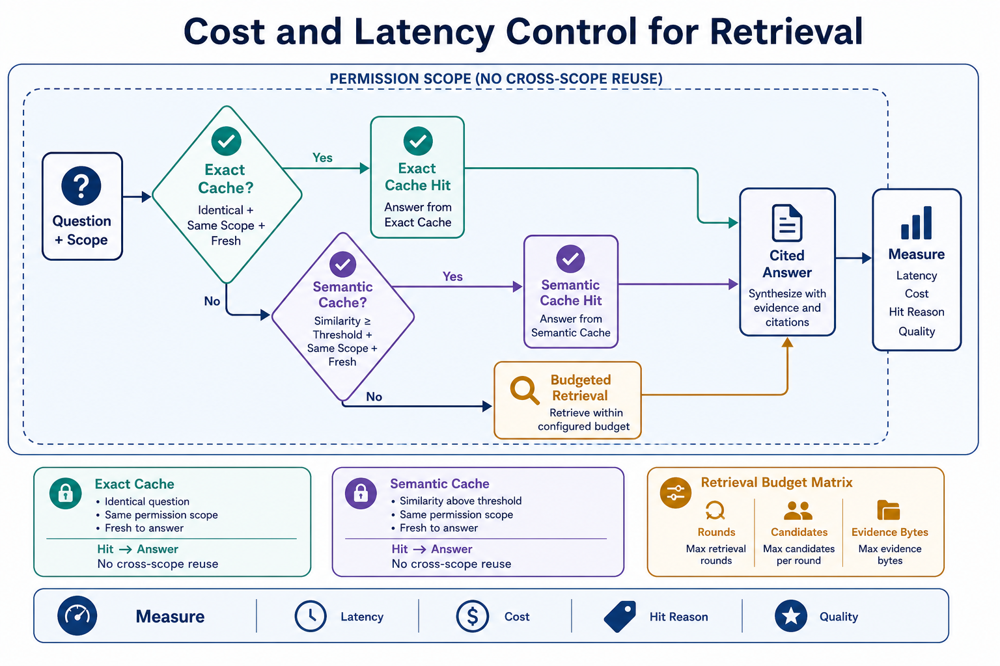
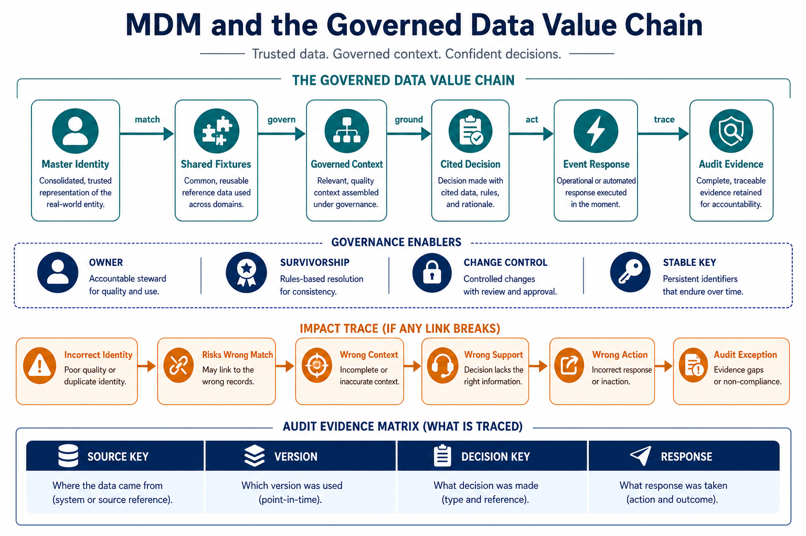

Bridge (16:00–16:05)
conda activate ai_agent_env
python -c "import fastapi, diskcache; print('fastapi + diskcache OK')"Library setup Redis and Neo4j Python clients (optional stretch topics today)
Postgres+pgvector, Redis, and Neo4j are already running as live VM services (confirmed in the pre-course check: pgvector 0.8.0, Redis 7.0.15, Neo4j active) — only their Python client libraries were missing.
conda activate ai_agent_env
uv pip install redis neo4j psycopg2-binary
python -c "import redis; r = redis.Redis(); print('redis ping:', r.ping())"Only needed if you do the optional Redis-cache comparison in Topic 05 or the Neo4j aside in Topic 04 — every required exercise today uses SQLite/diskcache instead, which need no service.
Topic 01 · Layered agent memory, revisited
Concept. Day 1 covered the four memory layers conceptually; Day 2 covered durable LangGraph checkpointing for HITL (Human-In-The-Loop). Today's version: the same SQLite-checkpoint mechanism, applied specifically to remembering a customer's session across multiple separate interactions — episodic memory (this specific customer's history) as distinct from semantic memory (general facts, like policy terms). 2026 memory APIs (Mem0 and similar, installed in ai_agent_env as mem0ai) typically extract and manage this automatically — but they need their own LLM (Large Language Model) backend to do the extraction, which is why we're building the SQLite version ourselves this week instead of relying on Mem0 out of the box.

- Episodic vs. semantic, concretely. "This customer emailed about CLM-424063 last week and was told to expect a call" is episodic. "Burst pipes are covered up to $10,000" is semantic — and lives in Day 3 AM's retrieval index, not in any one customer's session history.
Instructor drives live, variation A — a returning-customer session. VS Code terminal + Claude Code — reuse Day 2 Topic 06's checkpoint pattern, applied to a customer thread:
Using langgraph with a SqliteSaver at
W2D3/outputs/customer_sessions.sqlite, build a small graph that
records a note against a thread_id every time we "talk" to a customer.
Record a note for thread_id "jennifer-garcia" about claim CLM-424063
today, then end the process.Instructor drives live, variation B — resume it days later, for contrast. In a brand-new terminal/process:
Reconnect to the same SqliteSaver database and thread_id
"jennifer-garcia". Without me telling you anything, what do we already
know about this customer's history?CLAUDE.md (semantic/project memory, the same for every customer) and Day 1's working-context memory (gone the moment the session ends unless checkpointed like this).
Learners repeat. Record a second note for a different thread_id, then confirm the two customers' histories stay correctly separate when you reconnect to each.
Topic 02 · Knowledge-base engineering
Concept. A knowledge base isn't indexed once and forgotten — it needs a refresh cycle (Day 3 AM's checksum manifest tells you when) and a retrieval eval (precision/recall against a golden question set) to tell you whether the index is actually serving the right content, not just whether it runs.

- An eval can fail for two different reasons. Either retrieval is genuinely wrong, or the golden/eval data itself has a bug — you have to diagnose which, not just report a pass rate.
Run it together, variation A — the eval as shipped. VS Code terminal — a real golden set already exists in the repo:
uv run python W2D3/snippets/retrieval_eval.pyYou should see 4/5 pass. Investigate the failure with Claude Code:
Read W2D3/snippets/retrieval_eval.py's output for G-003, then look
at its entry in data/insurance/rag_goldens.json and the actual file
POL-HOME-010_flood_rider.md. Is this a retrieval bug or a golden-data bug?
Show me your reasoning.Run it together, variation B — fix the golden, re-run, for contrast.
If it's a golden-data bug, propose the corrected expected_policy_ids value
for G-003 (don't guess — check what the actual source file is named). Show
me the fix, but don't apply it yet — first tell me whether we should also
add a chunk_id-level check later, given the goldens already carry a
required_chunk_ids field our simpler eval doesn't use.Learners repeat. Add one new golden question of your own (any claim/policy you've worked with this week) to a scratch copy of the goldens file, and confirm the eval correctly passes or fails it.
Topic 03 · Real-time & event-driven data
Concept. An agent shouldn't have to poll for changes — a webhook lets an external system push an event the moment it happens. The consumer side has to be idempotent: a webhook provider may redeliver the same event more than once (network retry, at-least-once delivery guarantees), and processing it twice must be a safe no-op, not a duplicate action.

Run it together, variation A — start the webhook and send one event. VS Code terminal (separate tab):
uv run uvicorn W2D3.snippets.delay_webhook:app --port 8010In a second terminal:
curl -X POST http://127.0.0.1:8010/webhook/delay \
-H "Content-Type: application/json" \
-d '{"event_id":"DEL-001","container_id":"MSKU123","delay_hours":18}'Run it together, variation B — redeliver the same event, for contrast. Run the exact same curl command again, unchanged:
curl -X POST http://127.0.0.1:8010/webhook/delay \
-H "Content-Type: application/json" \
-d '{"event_id":"DEL-001","container_id":"MSKU123","delay_hours":18}'{"status":"processed",...}. Second, identical response: {"status":"duplicate_ignored",...}. Confirm with sqlite3 (or ask Claude Code) that the underlying table has exactly one row, not two.
delay_events.jsonl fixture — the same shape of event, this time arriving live over HTTP (Hypertext Transfer Protocol) instead of being read from a static file.
Learners repeat. Send a webhook call with a different event_id and confirm it's processed as new, not treated as a duplicate — the idempotency key has to be specific, not just "any repeated POST."
Topic 04 · Semantic layers & context graphs
Concept. A semantic layer gives a business term one governed definition (not five slightly-different ones scattered across prompts) and connects it to exactly where it's sourced in the data — the same discipline as Day 3 AM's lineage topic, applied to vocabulary instead of documents.

Optional stretch Neo4j as a real graph database, vs. Day 3 AM's in-memory NetworkX
Day 3 AM's claims_kg.json graph lived entirely in memory, rebuilt every run. Neo4j (already running as a VM service) is a real persistent graph database with its own query language (Cypher) — worth trying if you finish early, not required. Minimal connection check:
python -c "
from neo4j import GraphDatabase
driver = GraphDatabase.driver('bolt://localhost:7687', auth=('neo4j', '<sandbox password>'))
driver.verify_connectivity()
print('connected')
"Ask your trainer for the sandbox Neo4j password rather than guessing one. This is genuinely optional — everything required this week uses NetworkX.
Instructor drives live, variation A — define governed terms. Claude Code chat panel:
Define a small governed-terms dictionary for our project: "reserve_usd",
"route_queue", "grounding_available". For each, write one sentence
definition and the exact source (table.column or field) it comes from.
Save it as W2D3/outputs/glossary.json.Instructor drives live, variation B — catch an ungoverned term, for contrast.
Now, without checking the glossary, quickly explain what "urgency" means
in one sentence. Then check it against the glossary we just built — is
"urgency" actually defined there? If not, what's the risk of a term being
used constantly across our week's tools without ever being formally
governed?Learners repeat. Add "urgency" to the glossary yourself, sourced correctly to claims.urgency.
Topic 05 · Cost & latency control
Concept. An exact cache matches only identical query strings — fast, zero false hits, but misses obvious paraphrases. A semantic cache matches by embedding similarity above a threshold — catches paraphrases, but risks a false hit if the threshold is too loose. Checking exact first, then semantic, gets the speed of exact matches without losing paraphrase coverage.

Run it together, variation A — exact and semantic hits. VS Code terminal:
uv run python W2D3/snippets/semantic_cache.pyYou should see: an exact hit on the identical query, a semantic hit on the paraphrase (~0.95 similarity), and a miss on the unrelated query (~0.07 similarity).
Run it together, variation B — break the threshold, for contrast. Have Claude Code lower SIMILARITY_THRESHOLD deliberately (e.g. to 0.3) and re-run with a query that's topically related but should NOT be treated as the same question:
Temporarily lower SIMILARITY_THRESHOLD to 0.3 in a scratch copy of
semantic_cache.py, and test the query "is flood damage covered" against
the cached "is a burst pipe covered" entry. Does it now incorrectly
register as a cache hit? What does that mean for a real system with too
loose a threshold?Learners repeat. Restore the threshold to 0.85, then test two of your own query pairs (one true paraphrase, one superficially-similar-but-different question) and confirm the cache handles both correctly.
Topic 06 · MDM (Master Data Management) & the data value chain
Concept. Master data management is the unglamorous baseline that makes all of this trustworthy: claim_id, policy_id, order_id have to mean exactly one thing, consistently, across the lookup tool, the retrieval index, the graph, the cache, and the webhook — not five slightly different representations that happen to share a name.

Build it together. Claude Code chat panel — a small integrated check that exercises everything built across Day 1-3:
Write a short operator CLI script, W2D3/outputs/operator_check.py,
that takes a claim_id and reports: (1) the claim/policy record via
get_claim_and_policy, (2) whether it's grounded in the retrieval index,
(3) whether GraphRAG finds any related claims at the same address, (4)
whether it appears in any customer session memory. Run it for CLM-424063
and show me the combined report.claim_id string should thread cleanly through all four checks with no translation/mismatch — if it doesn't, that's exactly the kind of MDM gap this topic is warning about.
Learners repeat. Run the same operator check for the fraud-flagged CLM-255335 and confirm the combined report correctly reflects its ungrounded-policy status from Day 1.
App build (19:00–19:30) · Day 3 of the progressive insurance app
Days 1–2 only checked whether a policy document exists for a claim's product. Today's increment makes the app actually answer the coverage question — RAG (Retrieval-Augmented Generation) search over the indexed policy corpus (Topic 02), a cache in front of it (Topic 05), and a fraud-connection signal from the claims graph, all wired into the same resolve_email pipeline you've been extending since Day 1.
Direct Claude Code to build your own file, importing your Day 2 one rather than editing it in place — the same pattern app/day3_resolve.py uses on top of app/day2_resolve.py:
Create app/my_day3_resolve.py, importing resolve_email from your Day 2
file and extending its result. For any claim where grounding_available
is true:
1. Build (or reuse, if already built) a chunk -> embed -> LanceDB index
over data/insurance/policies/*.md.
2. Search it for a coverage question about the claim's own loss_type,
but restrict the search to ONLY that claim's own policy_doc_files --
never let it match a document belonging to a different product.
3. Put an exact-then-semantic cache in front of that search, and
hard-partition the cache by the claim's product (a namespace argument
on get/set), not by question text alone.
4. Add a same-address fraud signal: load the claims knowledge graph and
check whether this claim's address is shared by any other claim.
Print coverage_question, coverage_answer_source, coverage_excerpt, and
fraud_signal alongside the Day 2 fields. Run it for CLN-001.Before trusting the excerpt, reason out loud about why step 2 above restricts search to allowed_files at all: with unconstrained search over the whole policy corpus, a wording match from a different product's document can outrank the correct one — and if it gets cached, that wrong-product answer keeps getting served to anyone who asks a similarly-worded question afterward. Then run both claims and check the two excerpts really do come from each claim's own product, not a leaked cross-product answer:
Run my_day3_resolve.py for CLN-001 and then CLN-002. Show me both
coverage_excerpt values and which source_file each came from. Confirm
CLN-001's excerpt comes from a POL-HOME-010 file and CLN-002's comes
from a POL-COMM-030 file -- if either claim's excerpt is sourced to the
other's product, that's the grounding bug this course keeps warning
about, not a working result.CLN-001 (claim CLM-424063, homeowners) resolves with a coverage_excerpt starting "# POL-HOME-010 Water Damage Coverage...", sourced to a POL-HOME-010_* file — the claim's own product docs. CLN-002 (claim CLM-748422, commercial_property) resolves to a different excerpt sourced to a POL-COMM-030_* file — confirming the two claims are grounded independently, not cross-contaminated. CLM-424063's fraud_signal reports claimant Jennifer Garcia with same_address_claim_ids: ["CLM-100234"] and flag: true — a real 2-hop graph traversal (claim → address → another claim at that address) that no amount of text or vector search over one claim's own content could have surfaced.
Reference implementation (only if the build gets stuck)
A complete, tested version is at app/day3_resolve.py (the orchestration), app/rag_index.py (chunk → embed → LanceDB → cross-encoder rerank, with the allowed_files constraint), app/semantic_cache.py (exact + semantic cache, namespaced by product), and app/graph_signals.py (the same-address graph traversal). This course's own author hit both bugs above while building it — an unconstrained RAG search, then the same mistake resurfacing one layer up in a cache keyed on question text alone — and fixed both the same way: partition by product. Use these files to compare after you've built your own, not as the first attempt.
Logistics thread — homework
Point the webhook at real delay data
Adapt delay_webhook.py to also accept events matching the shape of data/logistics/delay_events.jsonl, and write a small script that replays every event in that file through the webhook once. Confirm replaying the same file a second time results in all-duplicate responses, not reprocessing.